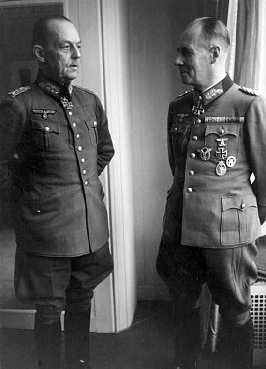
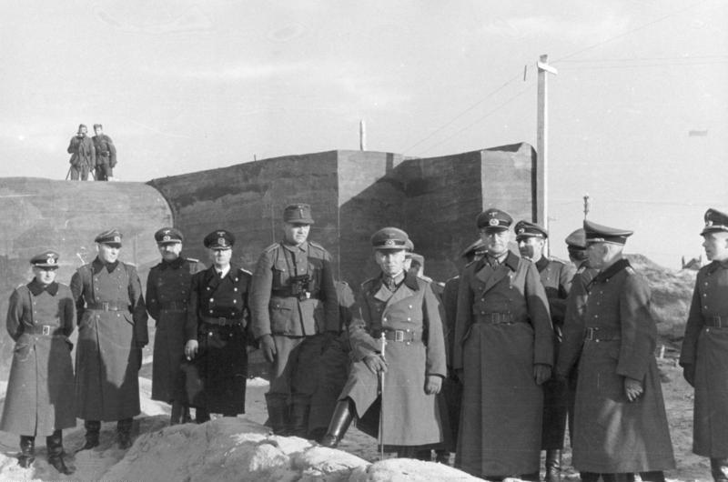
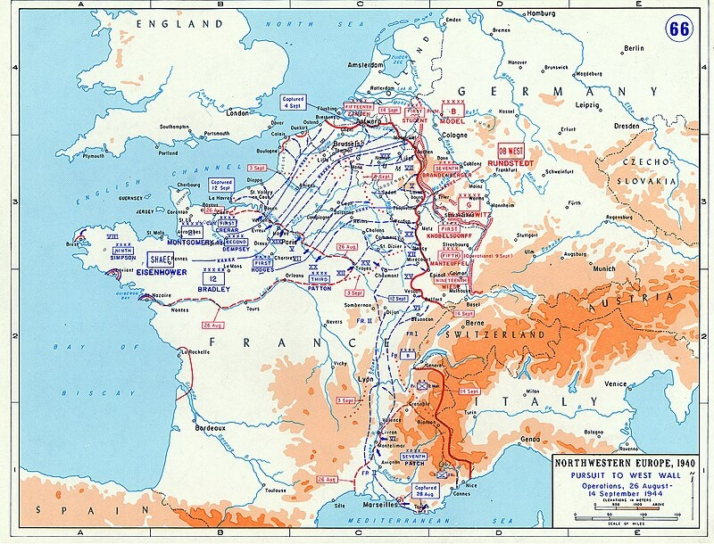
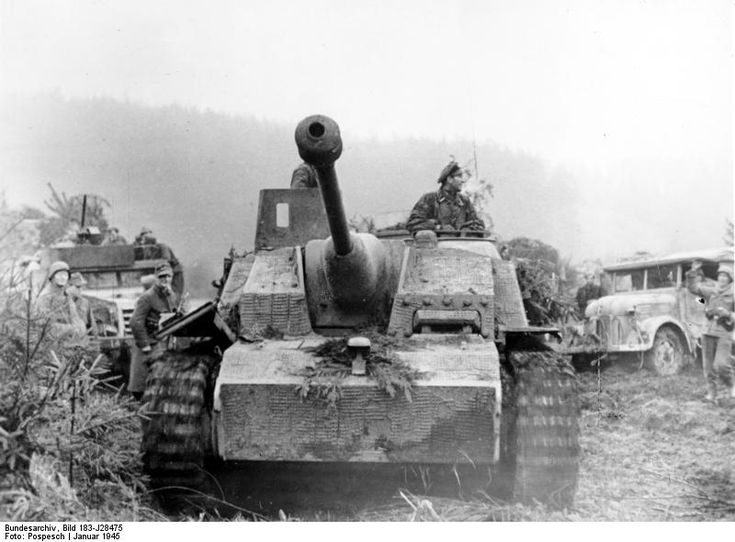

Почему Германия проиграла на Западном фронте в 1944-1945 гг.?
Автор статьи: Максим Вахминцев
Опубликовано: 17 октября 2023
Опубликовано: 17 октября 2023
Статья в группе ВК Историческая империя: https://clck.ru/3M6KUm
Летом 1944 года, накануне высадки союзников, между командующими Западным фронтом – Рундштедтом и Роммелем – начались острые разногласия касаемо обороны Франции. Роммель предлагал разместить танки у самого побережья, дабы выполнить пожелание Гитлера и сбросить союзников в море уже в самый момент их высадки на Атлантическом побережье. Рундштедт же предлагал иной вариант: перейти к маневренной обороне, необходимой для выигрыша времени, за которое можно было сформировать и разместить возле Парижа мощный танковый резерв.
Летом 1944 года, накануне высадки союзников, между командующими Западным фронтом – Рундштедтом и Роммелем – начались острые разногласия касаемо обороны Франции. Роммель предлагал разместить танки у самого побережья, дабы выполнить пожелание Гитлера и сбросить союзников в море уже в самый момент их высадки на Атлантическом побережье. Рундштедт же предлагал иной вариант: перейти к маневренной обороне, необходимой для выигрыша времени, за которое можно было сформировать и разместить возле Парижа мощный танковый резерв.
В конце концов было принято компромиссное решение - каждая армейская группа получила по 3 танковые дивизии и возможность развертывать их по своему усмотрению, в то время как стратегический резерв остался в подчинении Верховного командования вермахта и, соответственно, самого Гитлера. У последнего имелась весьма веская причина ожидать высадки союзников именно у Кале: здесь размещалось 55 стартовых площадок для самолетов-снарядов Фау, предназначенных для обстрела Лондона.
Тут же немцы сосредоточили и лучшие из 59 имевшихся у них на Западе дивизий, но проблема заключалась в том, что немалую долю войск, оборонявших Францию, составляли Восточные легионы, чья выучка оставляла желать много лучшего. Кроме того, войскам Западного фронта сильно не хватало транспорта, что затрудняло предлагаемую Рундштедтом задачу маневренной обороны.
Отдельно хочется поговорить об Атлантическом вале. Его строительство изначально оказалось настолько амбициозной задачей, что, как отмечает генерал Циммерманн, оно фактически началось лишь весной 1942 года. Несмотря на то, что немцы бросили на укрепление вала огромное количество ресурсов, он по-прежнему имел слабые места в бухте Сены, у Котантена, Бретани, Бискайского залива и тем более южного побережья Франции.

{kind=link}
Рундштедт и Роммель в Париже, 1944 г. Фото Бундесархива.
После осени 1943 года немцы были вынуждены сократить силы Западного фронта для, как уже о том говорили, обороны Италии – в таких условиях перспективы удержания фронта почти в 4 тыс. км становились еще более туманными, особенно после отказа Гитлера от идей маневренной обороны. Строительство Атлантического вала стало сколь бессмысленным, столь же и затратным – ради его усиления германское руководство пошло на фактический демонтаж Западного вала, а также, по данным Циммерманна, выделило около 10 млн м3 одного только железобетона.
Накануне высадки в Нормандии союзники имели небольшой численный перевес над немцами – 65 против 59 дивизий и могли в первой волне сразу же высадить морем около 20 дивизий. Фюрер не считал вероятным, что союзники смогут быстро добраться до Кале через Нормандию, а когда те все же начали там высадку, он не стал этому уделять большое внимание, считая, что англо-американские войска проводят отвлекающий маневр перед десантированием в Кале.

Накануне высадки в Нормандии союзники имели небольшой численный перевес над немцами – 65 против 59 дивизий и могли в первой волне сразу же высадить морем около 20 дивизий. Фюрер не считал вероятным, что союзники смогут быстро добраться до Кале через Нормандию, а когда те все же начали там высадку, он не стал этому уделять большое внимание, считая, что англо-американские войска проводят отвлекающий маневр перед десантированием в Кале.
{kind=link}
Фельдмаршал Эрвин Роммель осматривает оборонительные сооружения Атлантического вала близ бельгийского порта Остенде.
А ведь в первый день высадки германские войска имели возможность атаковать противника между реками Орн и Вир и, тем самым, ликвидировать его еще слабые плацдармы в Нормандии. Промедление Гитлера стало в итоге фатальным для немцев: союзники расширили Нормандский плацдарм и, пользуясь хаосом в немецкой обороне, начали продвигаться к Парижу. В этот момент Рундштедта спросили: «Что же делать?». Раздосадованный фельдмаршал ответил: «Заключайте мир, идиоты!».
Одновременно группа армий "Г", оборонявшая южное побережье Франции, оказалась в стратегической ловушке и была вынуждена отступить на северо-восток, дабы избежать окружения. К декабрю 1944 года союзники успели выйти к линии Зигфрида и начали угрожать ей фланговым обходом со стороны Бельгии и Нидерландов, но немцы смогли его предотвратить; после этого союзники были вынуждены приостановить наступление, так как их коммуникации оказались слишком растянуты, а резервы еще оставались далеко позади.
К концу 1944 года немцы не смогли адекватно организовать оборону Эльзаса и Лотарингии – здесь стояла группа армий «Верхний Рейн», возглавляемая Гиммлером и не подчинявшаяся командующему Западным фронтом. Не было и не могло уже быть должным образом обеспечено укрепление линии Зигфрида – все силы и ресурсы, которые можно было бы для этого использовать, оказались уничтожены вместе с потерянным Атлантическим валом.
Укрепления линии Зигфрида не отвечали текущим требованиям – они не были в состоянии выдерживать шквал артиллерийского и бомбардировочного огня. Компенсировать это немцы и рассчитывали проведением в декабре 1944 года наступления в Арденнах. И вновь Гитлер взял разработку операции в свои руки, не давая возможности вносить необходимые корректировки в уже принятые планы.

Одновременно группа армий "Г", оборонявшая южное побережье Франции, оказалась в стратегической ловушке и была вынуждена отступить на северо-восток, дабы избежать окружения. К декабрю 1944 года союзники успели выйти к линии Зигфрида и начали угрожать ей фланговым обходом со стороны Бельгии и Нидерландов, но немцы смогли его предотвратить; после этого союзники были вынуждены приостановить наступление, так как их коммуникации оказались слишком растянуты, а резервы еще оставались далеко позади.
К концу 1944 года немцы не смогли адекватно организовать оборону Эльзаса и Лотарингии – здесь стояла группа армий «Верхний Рейн», возглавляемая Гиммлером и не подчинявшаяся командующему Западным фронтом. Не было и не могло уже быть должным образом обеспечено укрепление линии Зигфрида – все силы и ресурсы, которые можно было бы для этого использовать, оказались уничтожены вместе с потерянным Атлантическим валом.
Укрепления линии Зигфрида не отвечали текущим требованиям – они не были в состоянии выдерживать шквал артиллерийского и бомбардировочного огня. Компенсировать это немцы и рассчитывали проведением в декабре 1944 года наступления в Арденнах. И вновь Гитлер взял разработку операции в свои руки, не давая возможности вносить необходимые корректировки в уже принятые планы.
{kind=link}
Наступление англо-американских войск во Франции в 1944 г. и крушение Атлантического вала.
Главной целью Арденнской операции был выход к линии Антверпен-Брюссель и окружение стоявших в Бельгии и Нидерландах союзные войска, после чего появлялась бы возможность заключить хотя бы с США сепаратный мир и высвободить силы, критически необходимые на Восточном фронте – таким образом, по сути намечалось повторение наступления 1940 года, принесшего тогда Германии грандиозную победу на Западе.
Ставка была вновь сделана, как и 4-мя годами ранее, на молниеносность удара - германские танки имели для него всего лишь несколько дней, в течение которых стояла нелетная погода и авиация союзников была вынуждена бездействовать. Кроме того, немцев также вынуждала спешить нехватка топлива для тех же танков, компенсировать которую можно было быстрым захватом Льежа и Намюра, где находились склады с бензином – при необходимых 30 тыс. м3 бензина у немцев изначально имелось на руках лишь меньше половины.

Ставка была вновь сделана, как и 4-мя годами ранее, на молниеносность удара - германские танки имели для него всего лишь несколько дней, в течение которых стояла нелетная погода и авиация союзников была вынуждена бездействовать. Кроме того, немцев также вынуждала спешить нехватка топлива для тех же танков, компенсировать которую можно было быстрым захватом Льежа и Намюра, где находились склады с бензином – при необходимых 30 тыс. м3 бензина у немцев изначально имелось на руках лишь меньше половины.
{kind=link}
Немецкая штурмовая самоходка StuG III ausf G, во время Арденнского наступления, 1944. Фото Бундесархива.
Разумеется, что сия операция заведомо являлась авантюрой и была обречена на провал - собственно, дальнейшие события это и подтвердили. Продвижение войск шло, как пишет Гудериан, «на узких обледенелых горных дорогах», резервы запаздывали, из-за чего темп наступления, в конце концов, был потерян; когда же погода улучшилась, союзники начали интенсивно бомбить наступающие войска и перешли затем в контрнаступление. Одной из главных причин провала наступления Гудериан называет вынужденную отсрочку его начала – вместо середины декабря 1944 года Арденнская операция должна была, по замыслам Берлина, начаться в середине ноября.
Кроме того, Рундштедт и Модель изначально предлагали ограничиться разгромом сил противника, стоявших восточнее Мааса, ибо на дальнейшее продвижение войскам Западного фронта просто не хватило бы сил и ресурсов, но, как известно, Гитлер в очередной раз решил сделать все по-своему и стремился к достижению политических целей вопреки реальной военной обстановке. Кульминацией же Арденнской авантюры стал Рурский котел, после которого англо-американские войска получили возможность продвигаться на восток, все ближе к столице Германии.
Рекомендуемая литература
Гудериан Г. Воспоминания солдата. — Смоленск.: Русич, 1999.
Мировая война. 1939–1945. — М: ACT; СПб.: Полигон, 2000.
Итоги Второй мировой войны. Выводы побеждённых. — СПб.: Полигон; М.: АСТ, 1998.
Кроме того, Рундштедт и Модель изначально предлагали ограничиться разгромом сил противника, стоявших восточнее Мааса, ибо на дальнейшее продвижение войскам Западного фронта просто не хватило бы сил и ресурсов, но, как известно, Гитлер в очередной раз решил сделать все по-своему и стремился к достижению политических целей вопреки реальной военной обстановке. Кульминацией же Арденнской авантюры стал Рурский котел, после которого англо-американские войска получили возможность продвигаться на восток, все ближе к столице Германии.
Рекомендуемая литература
Гудериан Г. Воспоминания солдата. — Смоленск.: Русич, 1999.
Мировая война. 1939–1945. — М: ACT; СПб.: Полигон, 2000.
Итоги Второй мировой войны. Выводы побеждённых. — СПб.: Полигон; М.: АСТ, 1998.